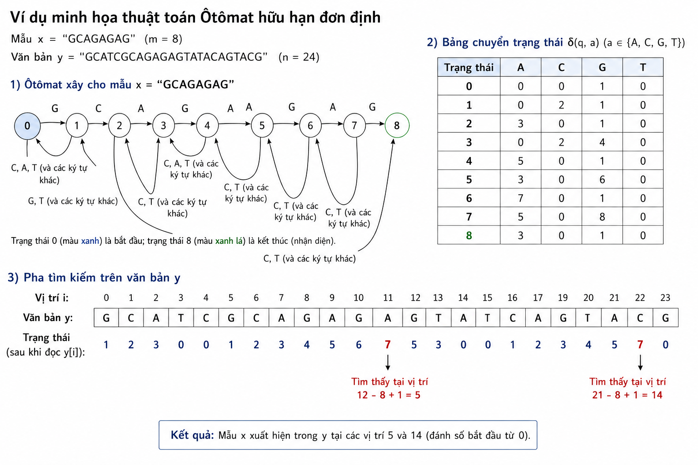

m.Ý tưởng cốt lõi là xây dựng một ôtômat hữu hạn đơn định (Deterministic Finite Automaton — DFA) nhận diện ngôn ngữ $\Sigma^*x$, tức tập mọi chuỗi kết thúc bằng mẫu x. Sau khi có ôtômat, việc tìm kiếm trở nên cực kỳ hiệu quả: ta chỉ việc "cho" từng ký tự văn bản vào ôtômat, theo dõi trạng thái hiện tại, và mỗi khi ôtômat đạt trạng thái kết thúc thì ta biết mẫu vừa xuất hiện.
Điểm mạnh là mỗi ký tự văn bản được xử lý đúng một lần với một phép tra bảng thời gian hằng số, cho nên pha tìm kiếm luôn là $O(n)$ bất kể cấu trúc mẫu hay văn bản. Cái giá phải trả là bộ nhớ và thời gian tiền xử lý $O(m\sigma)$, có thể lớn khi bảng chữ cái rộng.
Otomat gồm $m + 1$ trạng thái, đánh số từ 0 đến m. Trạng thái q biểu diễn ý nghĩa "hậu tố dài nhất của phần văn bản đã đọc mà đồng thời là tiền tố của mẫu có độ dài q". Trạng thái 0 là trạng thái khởi đầu; trạng thái m là trạng thái kết thúc (nhận diện), ứng với việc toàn bộ mẫu vừa được đọc.
Hàm chuyển $\delta(q, a)$ cho biết: nếu đang ở trạng thái q và đọc ký tự a, ta chuyển sang trạng thái nào. Nó được định nghĩa như sau: $\delta(q, a)$ là độ dài của tiền tố dài nhất của x đồng thời là hậu tố của chuỗi $x[0..q-1]a$. Nói cách khác, sau khi ghép ký tự a vào phần khớp hiện có, ta tìm phần khớp mới dài nhất có thể.
Để xây bảng chuyển một cách hiệu quả, ta dùng khái niệm trạng thái sao lưu (một biến k đóng vai trò tương tự hàm biên của Morris-Pratt). Với mỗi trạng thái mới, hầu hết các chuyển đi được sao chép từ trạng thái sao lưu, chỉ riêng chuyển theo ký tự khớp được đặt tăng một bậc. Cách xây này cho tổng chi phí $O(m\sigma)$.
Trong pha tìm kiếm, ta duy trì biến trạng thái hiện tại. Với mỗi ký tự văn bản y[i], ta cập nhật trạng thái bằng một lần tra bảng: $\text{state} = \delta(\text{state}, y[i])$. Khi $\text{state} = m$, mẫu xuất hiện kết thúc tại y[i], tức bắt đầu tại vị trí $i - m + 1$.
#include <stdio.h>
#include <stdlib.h>
#define ASIZE 256 /* kích thước bảng chữ cái */
/* Xây bảng chuyển delta[state][char] cho ôtômat nhận diện Sigma* x */
int **preAutomaton(char *x, int m) {
int i, state, k;
int c;
int **delta = malloc((m + 1) * sizeof(int *));
for (i = 0; i <= m; i++) {
delta[i] = malloc(ASIZE * sizeof(int));
}
/* Trạng thái 0: mọi ký tự dẫn về 0, trừ x[0] dẫn tới 1 */
for (c = 0; c < ASIZE; c++)
delta[0][c] = 0;
delta[0][(unsigned char)x[0]] = 1;
k = 0; /* trạng thái sao lưu */
for (state = 1; state <= m; state++) {
/* Sao chép các chuyển đi từ trạng thái sao lưu k */
for (c = 0; c < ASIZE; c++)
delta[state][c] = delta[k][c];
if (state < m) {
/* Chuyển theo ký tự khớp x[state] tăng một bậc */
delta[state][(unsigned char)x[state]] = state + 1;
/* Cập nhật trạng thái sao lưu */
k = delta[k][(unsigned char)x[state]];
}
}
return delta;
}
void search(char *x, int m, char *y, int n) {
int i, state;
int **delta = preAutomaton(x, m);
/* Duyệt văn bản, mỗi ký tự một lần tra bảng */
state = 0;
for (i = 0; i < n; i++) {
state = delta[state][(unsigned char)y[i]];
if (state == m)
printf("Tim thay tai vi tri %d\n", i - m + 1);
}
for (i = 0; i <= m; i++)
free(delta[i]);
free(delta);
}Xét mẫu x = "GCAGAGAG" ($m = 8$) trên văn bản y = "GCATCGCAGAGAGTATACAGTACG".

Otomat có 9 trạng thái (0 đến 8). Chuyển "thẳng" theo mẫu là:
$$0 \xrightarrow{G} 1 \xrightarrow{C} 2 \xrightarrow{A} 3 \xrightarrow{G} 4 \xrightarrow{A} 5 \xrightarrow{G} 6 \xrightarrow{A} 7 \xrightarrow{G} 8$$
Ngoài các chuyển thẳng này, mọi ký tự khác đưa trạng thái quay về một trạng thái nhỏ hơn (tính theo phần khớp còn giữ được).
Cho văn bản chạy qua ôtômat, trạng thái biến đổi như sau (chỉ liệt kê vài bước đầu):
| i | y[i] | state trước | state sau |
|---|---|---|---|
| 0 | G | 0 | 1 |
| 1 | C | 1 | 2 |
| 2 | A | 2 | 3 |
| 3 | T | 3 | 0 |
| 4 | C | 0 | 0 |
| 5 | G | 0 | 1 |
| 6 | C | 1 | 2 |
| 7 | A | 2 | 3 |
| 8 | G | 3 | 4 |
Ở bước $i = 3$, ký tự T không nối tiếp được phần khớp GCA, nên trạng thái rơi về 0. Từ $i = 5$ mẫu bắt đầu khớp lại, trạng thái tăng dần. Tiếp tục đọc A, G, A, G (tại $i = 9..12$), trạng thái sẽ lần lượt lên 5, 6, 7, 8. Khi đạt trạng thái 8 tại $i = 12$, ta báo xuất hiện tại vị trí $12 - 8 + 1 = 5$.